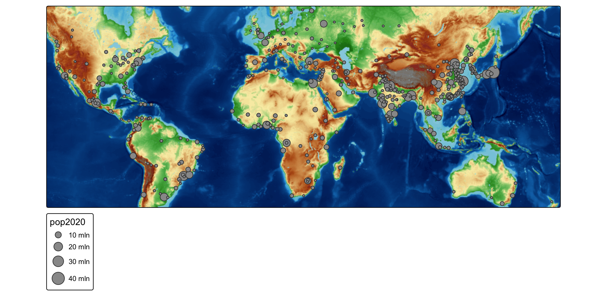
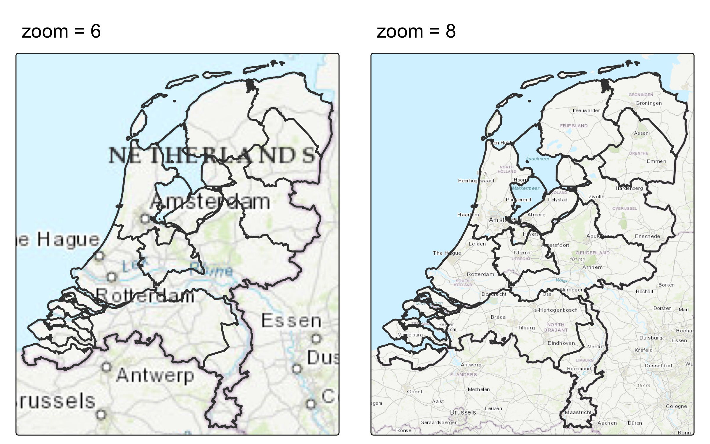
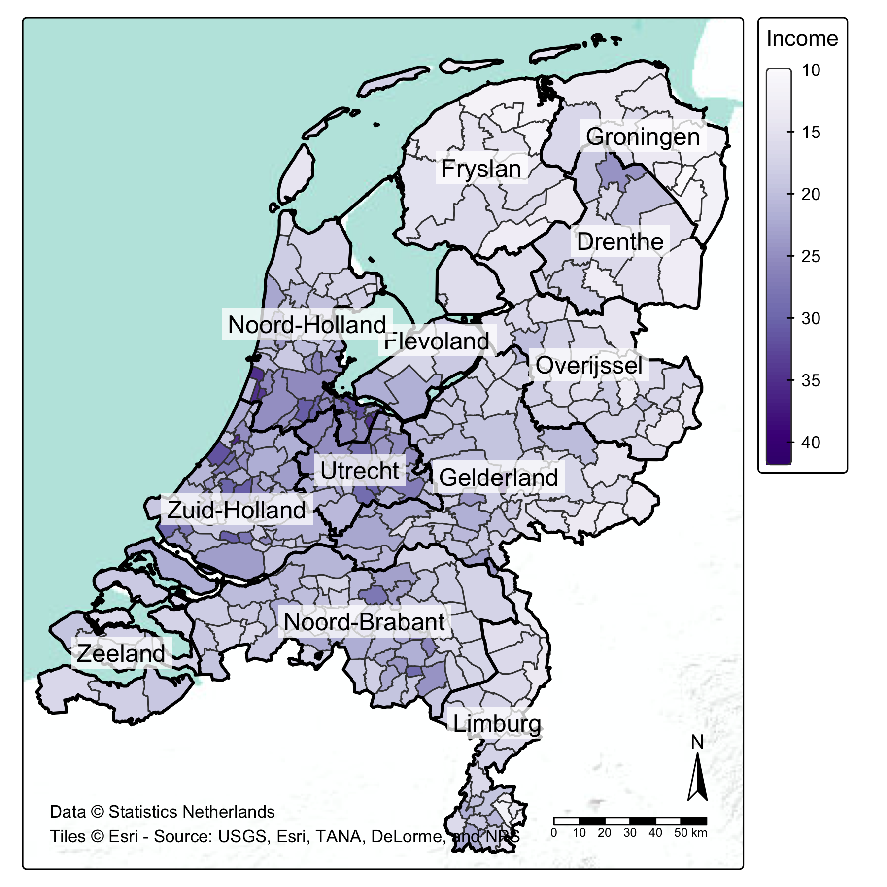
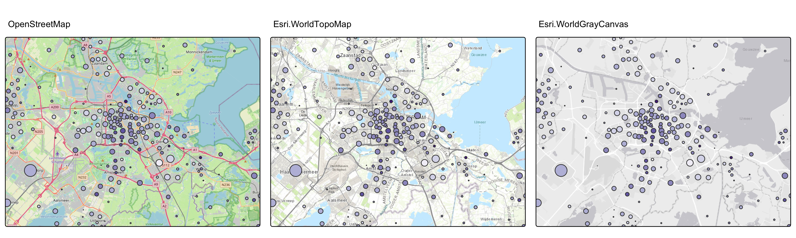
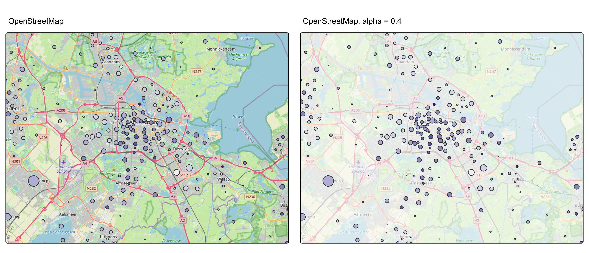
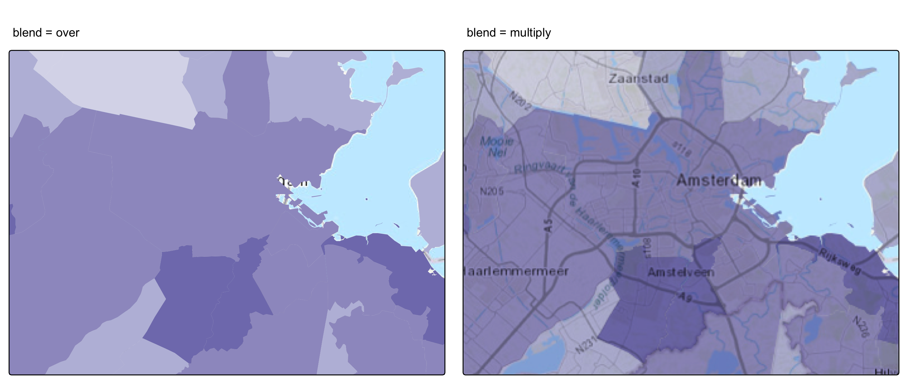
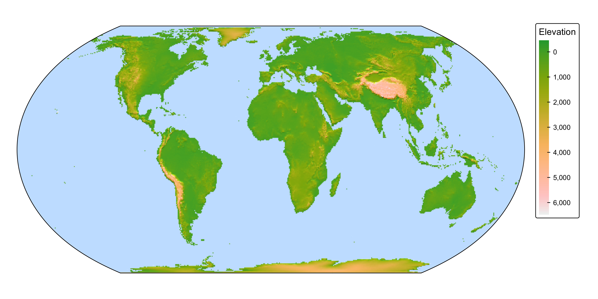
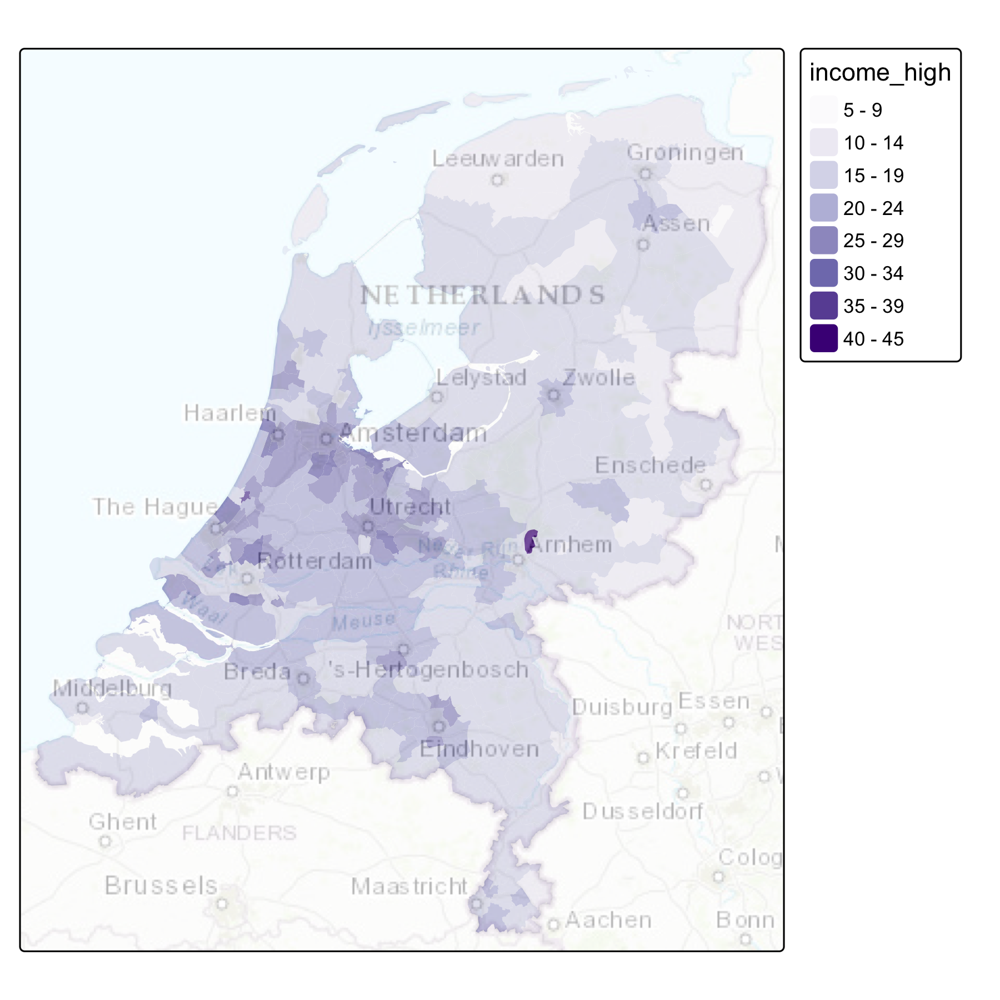
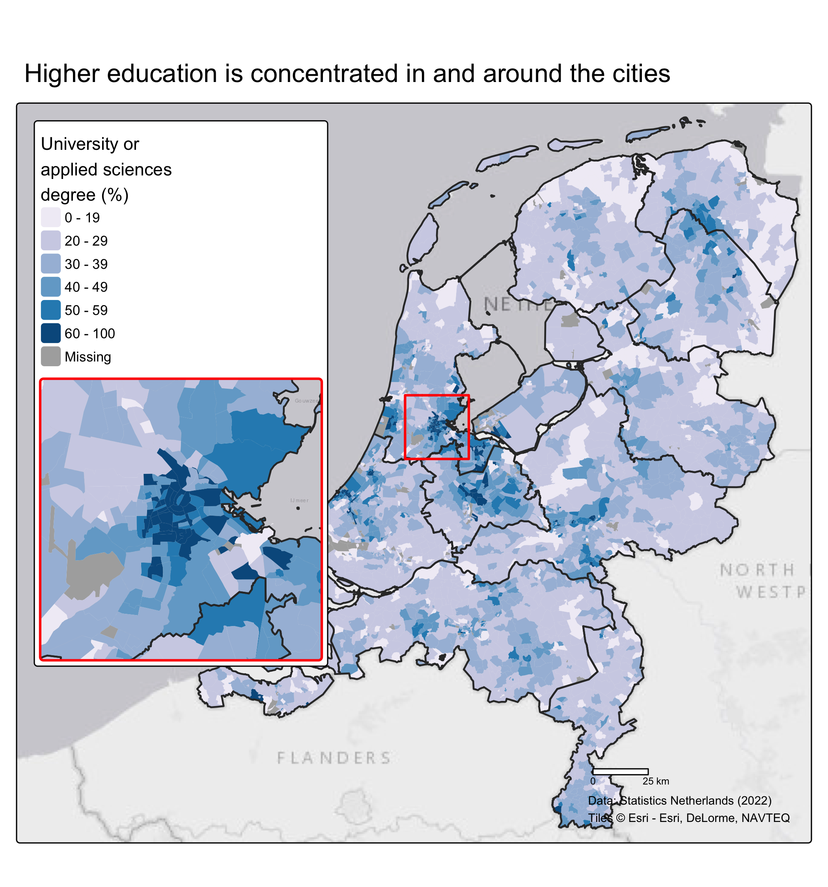

tm_shape(metro) +
tm_bubbles(size = "pop2020") +
tm_basemap("OpenTopoMap")Advanced Static Cartography in R
Session 12: Basemaps and final map design
Martijn Tennekes
Basemaps
Auxiliary layers
Auxiliary layers are non-data-driven spatial layers that provide context:
| Auxiliary layer | Description |
|---|---|
tm_basemap() |
background tile map, drawn as bottom layer |
tm_tiles() |
overlay tile map, e.g. labels or roads, drawn in call order |
tm_graticules() |
latitude/longitude graticule lines |
tm_grid() |
projected coordinate grid in the map CRS |
Basemaps in plot mode
- By default, basemaps are shown in
"view"mode only - In
"plot"mode, a basemap is added withtm_basemap()(requires the package maptiles) - Without arguments:
"Esri.WorldGrayCanvas"
Basemaps in plot mode

Available providers
[1] "OpenStreetMap" "OpenStreetMap.DE"
[3] "OpenStreetMap.France" "OpenStreetMap.HOT"
[5] "OpenTopoMap" "Stadia.AlidadeSmooth"
[7] "Stadia.AlidadeSmoothDark" "Stadia.OSMBright"
[9] "Stadia.Outdoors" "Stadia.StamenToner"
[11] "Stadia.StamenTonerBackground" "Stadia.StamenTonerLines"
[13] "Stadia.StamenTonerLabels" "Stadia.StamenTonerLite"
[15] "Stadia.StamenWatercolor" "Stadia.StamenTerrain"
[17] "Stadia.StamenTerrainBackground" "Stadia.StamenTerrainLabels"
[19] "Esri.WorldStreetMap" "Esri.WorldTopoMap"
[21] "Esri.WorldImagery" "Esri.WorldTerrain"
[23] "Esri.WorldShadedRelief" "Esri.OceanBasemap"
[25] "Esri.NatGeoWorldMap" "Esri.WorldGrayCanvas"
[27] "CartoDB.Positron" "CartoDB.PositronNoLabels"
[29] "CartoDB.PositronOnlyLabels" "CartoDB.DarkMatter"
[31] "CartoDB.DarkMatterNoLabels" "CartoDB.DarkMatterOnlyLabels"
[33] "CartoDB.Voyager" "CartoDB.VoyagerNoLabels"
[35] "CartoDB.VoyagerOnlyLabels" "Thunderforest.OpenCycleMap"
[37] "Thunderforest.Transport" "Thunderforest.TransportDark"
[39] "Thunderforest.SpinalMap" "Thunderforest.Landscape"
[41] "Thunderforest.Outdoors" "Thunderforest.Pioneer"
[43] "Thunderforest.MobileAtlas" "Thunderforest.Neighbourhood" Previews: https://leaflet-extras.github.io/leaflet-providers/preview/. In "view" mode more providers are available.
API keys
- CARTO (since August 2026), Stadia and Thunderforest require an API key
- Set it via the
apiargument:
- For Stadia and Thunderforest (plot mode), the key can also be stored in the environment variables
"STADIA_MAPS"and"THUNDERFOREST_MAPS" - Without a key, CARTO basemaps are shown with an “API KEY REQUIRED” watermark
- Esri and OpenStreetMap basemaps need no key
Zoom level
zoom (plot mode only) sets the level of detail of the tiles:
Higher zoom: more detail (and more labels), and more tiles to download.
Zoom level

Credits
Tile providers require an attribution. tmap_provider_credits() returns the text:
[1] "Tiles © Esri - Source: USGS, Esri, TANA, DeLorme, and NPS"tm_shape(NLD_muni) +
tm_polygons(
fill = "income_high",
fill.scale = tm_scale_continuous(values = "brewer.purples"),
fill.legend = tm_legend(title = "Income")) +
tm_shape(NLD_prov) +
tm_borders(col = "black", lwd = 2) +
tm_text(text = "name", bgcol = "white", bgcol_alpha = 0.75) +
tm_basemap("Esri.WorldTerrain") +
tm_credits(
text = paste("Data © Statistics Netherlands",
tmap_provider_credits("Esri.WorldTerrain"), sep = "\n"),
position = tm_pos_in("left", "bottom")) +
tm_compass() +
tm_scalebar()Credits

Choosing a basemap
Does the map need a basemap?
✅ Yes, when:
- readers need to locate features: roads, place names, terrain
- the thematic layer is sparse (points, lines) and needs geographic context
- the study area is unfamiliar to the audience
🚫 No (or a very subtle one), when:
- the thematic layer covers the whole area (choropleth): the basemap is hidden anyway
- the geometry is transformed: cartograms, grid maps — a basemap would be inconsistent
- the basemap distracts from the message
Evaluating basemaps
| Criterion | Question |
|---|---|
| Hierarchy | Is the basemap subordinate to the thematic layer? |
| Colors | Do basemap colors conflict with the palette (e.g. green parks vs. a green-purple scale)? |
| Labels | Are there too many (or too few) labels at this scale? |
| Contrast | Is the thematic layer readable on top of it? |
| Language | Are labels in the language of the audience? |
| Licence | Is attribution included? Is an API key required? |
Muted basemaps (grey canvas, light terrain) are usually best for thematic maps.
Comparing basemaps
bb_ams = tmaptools::bb(NLD_muni[NLD_muni$name == "Amsterdam", ], ext = 1.5)
tm_b = function(server) {
tm_shape(NLD_dist, bbox = bb_ams) +
tm_bubbles(size = "population", fill = "income_high",
fill.scale = tm_scale_intervals(values = "brewer.purples"),
fill.legend = tm_legend_hide(), size.legend = tm_legend_hide()) +
tm_basemap(server) +
tm_title(server, bg = TRUE, bg.color = "white", size = 0.8)
}
tmap_arrange(tm_b("OpenStreetMap"), tm_b("Esri.WorldTopoMap"),
tm_b("Esri.WorldGrayCanvas"), ncol = 3, asp = NULL)Comparing basemaps

Transparency
alpha in tm_basemap() makes the basemap more subtle:
tmap_arrange(
tm_b("OpenStreetMap"),
tm_shape(NLD_dist, bbox = bb_ams) +
tm_bubbles(size = "population", fill = "income_high",
fill.scale = tm_scale_intervals(values = "brewer.purples"),
fill.legend = tm_legend_hide(), size.legend = tm_legend_hide()) +
tm_basemap("OpenStreetMap", alpha = 0.4) +
tm_title("OpenStreetMap, alpha = 0.4", bg = TRUE, bg.color = "white", size = 0.8),
ncol = 2, asp = NULL)Transparency

Basemap and choropleth: blending
With a choropleth on top, the basemap disappears. Blending keeps reference details visible:
tm_choro = function(blend) {
tm_basemap("Esri.WorldTopoMap", zoom = 10) +
tm_shape(NLD_muni, bbox = bb_ams) +
tm_polygons(fill = "income_high",
fill.scale = tm_scale_intervals(values = "brewer.purples"),
fill.legend = tm_legend_hide(),
col = NULL,
blend = blend) +
tm_title(paste("blend =", blend), bg = TRUE, bg.color = "white", size = 0.8)
}
tmap_arrange(tm_choro("over"), tm_choro("multiply"), ncol = 2, asp = NULL)Basemap and choropleth: blending

Blend modes
blend |
Result |
|---|---|
"over" |
the top layer simply covers the layer below (default) |
"multiply" |
always darker; white in the top layer leaves the layer below unchanged |
"screen" |
always lighter; the opposite of multiply |
"overlay" |
raises contrast: dark areas darker, light areas lighter |
Other modes: "darken", "lighten", "color.dodge", "color.burn", "hard.light", "soft.light", "difference", "exclusion"
"multiply": labels, roads and borders of a light basemap remain legible through the thematic colors- Requires R ≥ 4.2 and a compositing graphics device (e.g.
png(type = "cairo"),svg())
Shaded relief
A hillshade blended onto a colored elevation map adds a sense of relief:
Shaded relief: blending
tm_shape(land) +
tm_raster("elevation",
col.scale = tm_scale_continuous(values = "hcl.terrain"),
col.legend = tm_legend("Elevation")) +
tm_shape(hs) +
tm_raster("hillshade",
col.scale = tm_scale_continuous(values = c("black", "white")),
col.legend = tm_legend_hide(),
blend = "overlay") +
tm_crs("+proj=eqearth") +
tm_layout(
earth_boundary = TRUE,
bg.color = "slategray1",
frame = FALSE,
earth_boundary.lwd = 1,
inner.margins = 0.01)Shaded relief: blending

Overlay tiles
tm_tiles() draws a tile layer on top of the layers called before it:
Typical use: an overlay with only labels (e.g. "CartoDB.PositronOnlyLabels", API key required).
Overlay tiles

Final map design
Checklist: content
Checklist: layout
Putting it together
bb_ams2 = tmaptools::bb(NLD_muni[NLD_muni$name == "Amsterdam", ], ext = 1.2)
tm_final = tm_shape(NLD_dist) +
tm_polygons(
fill = "edu_appl_sci",
fill.scale = tm_scale_intervals(
breaks = c(0, 20, 30, 40, 50, 60, 100),
values = "brewer.pu_bu"),
fill.legend = tm_legend("University or\napplied sciences\ndegree (%)", group_id = "top"),
col = NULL) +
tm_shape(NLD_prov) +
tm_borders(col = "grey20", lwd = 1.5) +
tm_basemap("Esri.WorldGrayCanvas") +
tm_title("Higher education is concentrated in and around the cities",
position = tm_pos_out("center", "top", pos.h = "left")) +
tm_inset(bb_ams2, group_id = "top", height = 12, width = 12,
box_frame.color = "red", main_frame.color = "red") +
tm_scalebar(breaks = c(0, 25, 50), group_id = "bottom") +
tm_credits(paste("Data: Statistics Netherlands (2022)",
tmap_provider_credits("Esri.WorldGrayCanvas"), sep = "\n"),
group_id = "bottom", size = 0.6) +
tm_components("top", position = tm_pos_in("left", "top")) +
tm_components("bottom", position = tm_pos_in("right", "bottom"), frame = FALSE) +
tm_layout(inner.margins = c(0.02, 0.3, 0.02, 0.02))
tm_finalPutting it together

Exporting
- Design the map at the final output size: a map that looks good in the RStudio plot pane may look very different at 7 × 7.5 inches
scaleadjusts all font sizes, line widths and symbol sizes at once, e.g.scale = 0.8- Check the exported file, not only the plot pane: small differences in font sizes, margins and symbol sizes between formats may occur
- Layers with
blendrequire a compositing device: check the exported file carefully
Course recap
- Design: map type, scales, legends, visual hierarchy, layout and components
- Color: palette types, cols4all, color-blind friendliness, contrast
- Multivariate: bivariate choropleths, glyphs (
tmap.glyphs) - Alternative geometries: grid maps (geofacet, gridmappr), cartograms (
tmap.cartogram) - Networks:
tmap.networks, half lines, donut maps - Composition: insets, charts, basemaps, blending, final design
Further reading
- tmap documentation: vignettes and examples
- Basemaps | Blending | Exporting
- Spatial Data Visualization with tmap — upcoming book
- Geocomputation with R — mapping chapter